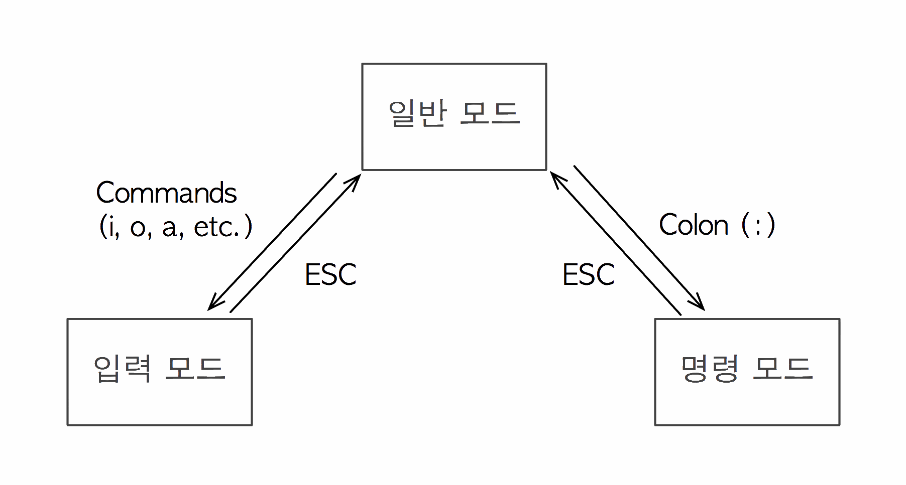
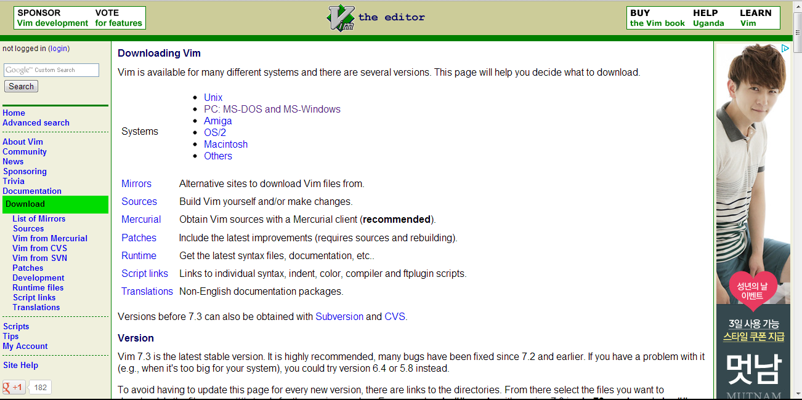

vim은 Emacs와 함께 UNIX/LINUX환경에서 가장 많이 쓰이는 텍스트 편집기로 1976년 Bill Joy에 의해서 초기 BSD(Berkelery Software Distribution) release에 포함될 예정으로 제작되었습니다.
현재의 텍스트 편집기의 경우 WYSIWYG(What Tou See Is What You Get:문서 편집과정에서 화면에 포맷된 낱말, 문장이 출력물과 동일하게 출력되는 방식)를 자연스럽게 지원하고 있지만 초기 텍스트 편집기의 경우 line별로 편집하는 기능만을 가지고 있었습니다.
이를 line editor(ed)라 칭하였는데, vi는 이러한 줄(line)단위 편집이 아닌 한 화면을 편집하는 Visual Editor라는 뜻에서 유래합니다.
현재 오리지널인 vi는 남아있지 않고 이를 모방하여 만들어진 클론들을 사용하고 있으며, vim의 의미는 한단계 향상된(improve) vi이라는 의미입니다.
Vi는 마우스가 개발되기 이전에 생성된 텍스트 편집기입니다.
이것이 뜻하는 말은 창에 메뉴나 버튼등의 기능이 존재하지 않았다는 말이지요.
때문에 Vi에서 메뉴를 사용하기 위해서는 단축키(Short Cut)를 통해서만 이러한 기능들을 사용할 수 있습니다.
일반적으로 Ctrl이나 Alt등의 키 조합을 이용하여 기능을 사용할 수 있지만, 텍스트 편집기 외부적인 요인으로 키 조합은 한계가 존재할 수 밖에 없습니다.
이러한 이유로 Vi에서는 특정한 키 조합을 하지 않고서도 기능을 호출하기 위하여 mode를 구분하였습니다.
|  |
|
이미지 출처:rigvedawiki.net |
Mode는 그림에서 보다시피 일반모드(Normal mode), 입력모드(Insert mode), 명령모드(Commend mode) 크게 3가지로 구분이 가능합니다.
우선 일반 모드란, 방향키로 이동이나 특정 문자를 수정/삭제등의 편집에 사용되는 모드를 말합니다.
일반 모드에서 i,a,o 등을 입력했을 때 입력모드로 전환되는데 이 상태에서만 텍스트의 입력이 가능합니다.
일반 모드에서 :(colon)을 입력하면 명령모드로 전환됩니다. 이는 시스템과 관련된 부분을 담당합니다.
ESC키는 입력모드, 명령모드에서 일반모드로 전환할 때 사용합니다.
1.레드햇 계열(레드햇,페도라,CentOS)
설치를 위해서는 관리자 계정이 필요하므로 root로 로그인을 합시다.
[root@localhost~]# yum install vim-enhanced
볼딕체로 굵게 쓰여진 부분이 실제 입력할 부분입니다.
명령어가 성공하면 다운로드가 진행되고 자동으로 설치 및 업그레이드가 진행됩니다.
2.데비안 계열(데비안,우분투)
기본적으로 레드햇 계열과 같이 관리자 권한이 필요하므로 root로 로그인을 합시다.
linuxer@linuxer-desktop:~$ apt-get install vim
3.윈도우 계열
윈도우용 Vim은 설치용 프로그램이나 압축파일 형태로 제공됩니다.
vim 웹사이트의 다운로드 페이지를 통해서 제공되며 일반적으로 95이상(32bit) 외에도 64bit 및 Visual Studio에서 사용가능한 OLE등이 지원되므로 필요한 버전을 받아서 설치하면 됩니다.
설치 과정에 있어서 타 프로그램과 차이점 없이 Next만으로 설치가 완료됩니다.
|  |
|
www.vim.org 의 Download page |
4.MAC OS
매킨토시의 맥 OS X는 BSD 유닉스 계열이므로 기본적으로 Vim을 탑재하고 있습니다.
그러하므로 따로 설치할 필요는 없으나 GUI(Graphic User Interface)버전을 사용하고 싶다면 위의 윈도우 계열과 마찬가지로 vim 웹사이트를 방문하여 이를 설치해야 합니다.
Vim 실행하기
터미널을 사용하는 리눅스, 유닉스, 맥등의 경우 shell에서 vim 또는 vim [filename]등을 입력하여 실행합니다.
반면 윈도우의 경우 편집할 텍스트 파일을 마우스 오른쪽으로 선택하고 팝업 메뉴에서 '빔으로 편집'을 눌러서 실행합니다.